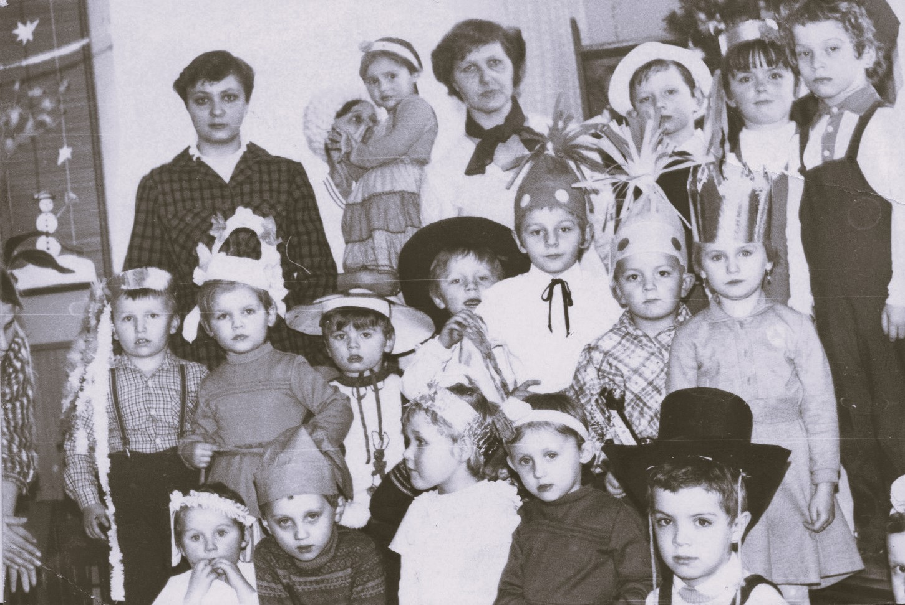
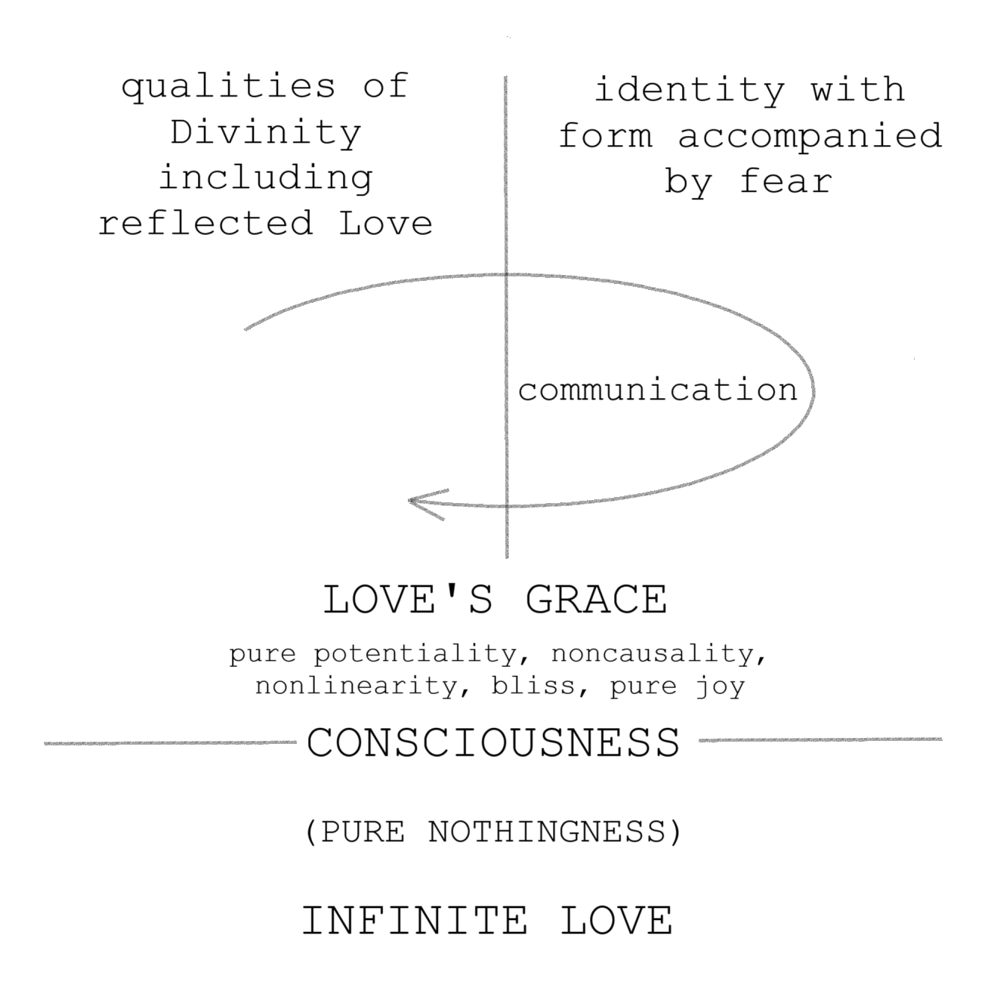
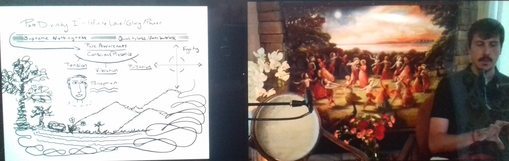
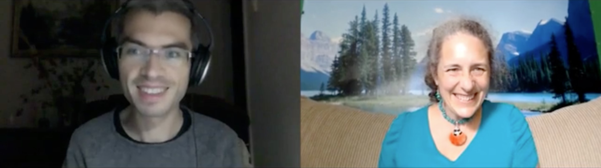
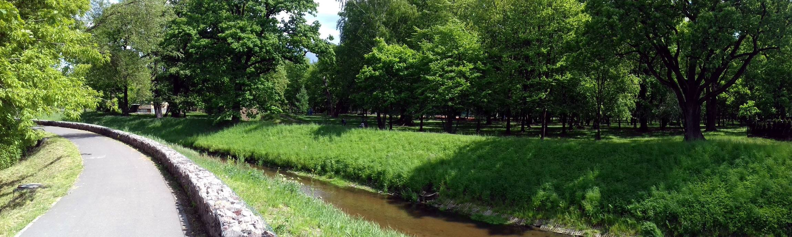
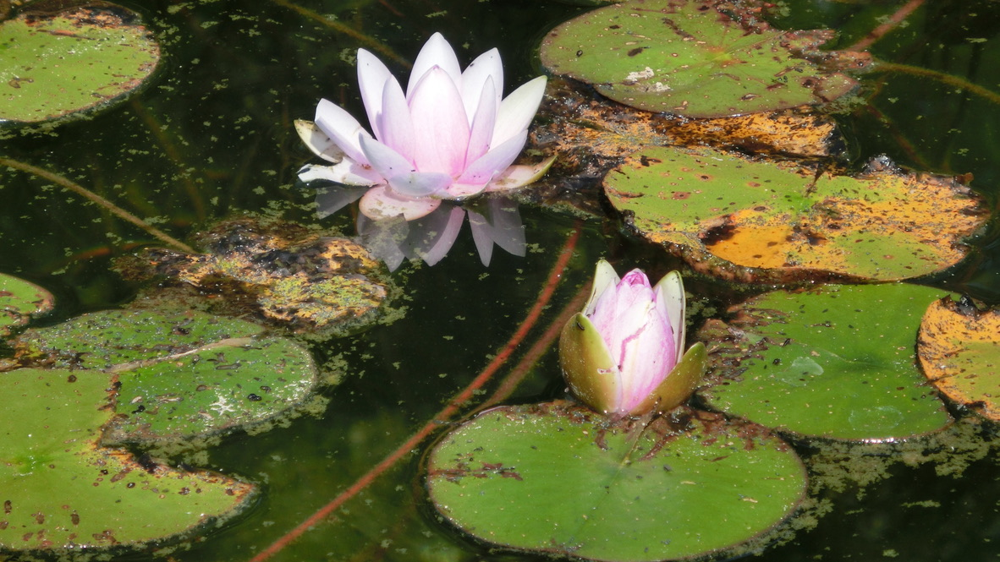

What We Are
This website serves as a kind of spiritual/personal bio through which, to my joy, I express my experience.
I was born in Poland (1978) as one of two sons, in a family with peasant roots. The story of my family life was in many respects typical, but at the same time turbulent and marked by psychological suffering. Regardless, from an early age I had an affirmative attitude towards my life: learning came easily to me, I had a lot of freedom to spend my time in the way I chose for myself. I easily found activities and interests in the succession of passions that absorbed my attention on the basis of constant exploration (from dismantling mechanical toys in early childhood and building various devices from them, through karate training "from books" and a lot of fun together with my cousins and neighbors' children, in complete freedom, in various corners of our village, through painting with oil paints, learning to play the guitar and fascination with jazz in teenage years, to fascination with photography and programming and sincere dedication to exploring science during studies). The only thing I did not actively explore was the sphere of contacts with the opposite sex - despite several "love affairs" during my childhood, youth and early manhood - and several friendships that were of a more lasting nature - I was not in any romantic relationship. This was partly due to a lack of self-confidence related to lymphatic swelling of the legs, which appeared at the age of about 12, but it was also conditioned by the constant awareness of the suffering in the relationship between my parents. A large part of my life was marked by involvement in various aspects of family dynamics, which only after the age of 45 gradually subsided and lost the signs of constant struggle. After finishing high school, I went to study in Krakow, where I spent seven years in the company of many beautiful characters and good friends. In 2004, after studies and a short period of work, I took advantage of the offer of a doctoral scholarship in Glasgow (UK). Soon some of my friends from Krakow moved to Glasgow with me. Our adventure together continued, expanding to include an international group of new acquaintances. It was in the background of this that a qualitatively new insight opened for me - the sphere of spiritual awakening, nonduality, and Divine Love (below is the only preserved photo from the kindergarten; bottom right corner, black hat).
In 2009, an episode of meditation opened my perspective into timeless bliss and a spontaneous flow of Love that lasted day and night for over a week. It was quite unexpected - a friend drew my attention to one of the sages of the East, which in turn redirected it further to the person of Ramana Maharshi and to several books about mystical experience and one book about meditation, based on which I had started a spontaneous practice a few weeks earlier. I lived in Glasgow at the time and after completing my PhD, I worked at one of the universities there. On the day of this opening, I mistakenly went to a church an hour too early and decided to spend time meditating in a nearby park. I remember that I was determined to dive deep within myself - and that those few moments that I spent in inner darkness and gentle bliss, to my surprise, turned out to be an entire hour. Walking back to the church, I noticed that my perspective was filled with a previously unknown depth of sensitivity to the spiritual dimension of everything I perceived. That same night I regained awareness during sleep: I was aware that my body had been left and was still sleeping, but I myself was perceiving through a more abstract disembodied instrument. My initial perspective was of complete darkness accompanied by a feeling of peace. After some time, it moved into an ocean of white light, accompanied by waves of bliss so great that each subsequent one seemed impossible. In both of these states there was no distinct structure - pure formlessness reigned. There was also no dimensionality of space - as in "three-dimensional space". My perspective was a point that reflected the quality of the whole state in which I was located. In the light, the power of bliss was so great that my physical body was unable to reflect it - after a sudden awakening, I found it completely inflamed - at the edge of its endurance. The state of bliss and Love that filled my heart lasted continuously for several days, during which the flow of time seemed to be plastic and at the same time everything I perceived was decorated with a subtle aura of beauty that I had never noticed before. While going to work and meeting friends, I was constantly aware of a deep intimacy with everything and everyone - an intimacy in Love and Oneness that is known to all of us but that we do not talk about. The intensity of this change eventually subsided, leaving behind a gradually budding reorientation of the rest of my life (some photos from Glasgow below).


I remember that in the period preceding my interest in meditation, the accumulated stress of previous years of intensive study and various family troubles made itself felt several times in the form of unexpected panic attacks - it was a new experience for me - stress was released from my physiology in windows of uncontrolled flow, as something I could observe but had no influence on (one such case occurred between the shelves in a university library). I was also prone to frequent psychosomatic illnesses, colds, or digestive disorders, which appeared and disappeared in correlation with the state of my emotions. I was still driven by an unstoppable affirmative life force and convinced that I could cope with anything. At the same time, my life was full and intensely felt, amid the challenges of research work and the variety of friendships in which I was involved. At the end of my doctoral studies, after one of the stays in the country, in 2008, my almost 40-year-old brother, who had been living with our parents until then, came to Glasgow with me. This opened a new chapter of involvement in the family history, which continued with intensity for the next dozen or so years. My brother had a degree of intellectual disability since childhood and in his own way, by asking for a joint trip, he was looking for entry into his own maturity. All this happened against the background of strong psychological interdependence between us and our parents, in the movement of resolution of a tension that we were not entirely consciously of.
In a simplified way, the experience of qualityless darkness and infinite bliss, and how I understand them today within my perspective, is shown in the figure below. Darkness corresponds to Pure Nothingness, light and bliss correspond to Infinite Love. Both of these states precede consciousness - the domain in which the object and subject of perception exist.
In the years 2019-2023, I often listened to talks by Andrew Hewson (spiritual teacher), who from his own experience spoke about Pure Divinity (Infinite Love) and the Supreme Void (Pure Nothingness) as states preceding consciousness. I can't say for sure whether the insight I had in 2009 referred to the same states, but it's easiest for me to assume that's the case. In consciousness, God's Love is reflected as the vibration of Love. In the drawing, the Grace of Love - the Grace of God - is that part of consciousness that remembers Divine Love and supports the remaining part of consciousness, dominated by the identity with the form of the body accompanied by fear, in remembering its loving Source. I am aware that in consciousness, as a multidimensional hologram, there are many beings that are part of the Grace of Love. Each one of us, through the very construct of individuality, remains in contact with subtle, energetic beings of this nature. In my perspective today, I associate God's Grace with an energy, a voice and a way of seeing through which I become aware of the presence of universal Love. What I call "communication" in the drawing above is all that comes from and relates to the memory that we have our origin in Infinite Love (below is a photo from one of Andrew's group Zoom meetings in 2021).
In 2012, after completing my postdoctoral contract in Glasgow, I moved to Durham in the north of England, where I worked as a lecturer in the department of engineering for the next four years. During this period, while busy with work-related matters, I was constantly in self-observation oriented towards insight into the nature of my own perspective. Meditation allowed me to come into contact with the energetic aspect of bliss - the observation provided insight into the impersonal nature of a place from which I could see the activity of my more detailed "self" and how this "self" relates to various wanted and unwanted relationships, perceptions and experiences. Over time, I began to naturally rest in the impersonal aspect of my perspective, and at the same time, my sensitivity began to open to conscious observation of subtle energy flows in the context of relationships, feelings, and mental constructs of identity. Simultaneously with this, I was exploring many "spiritualties" at once, wanting to understand and place my experience in a context that would have some common denominator. With joy and relief (that such places exist), I visited a nearby Zen order and made friends with a local group of Buddhists. In parallel with this, I read A Course in Miracles (ACIM), The Way of Mastery, and watched many interviews of Buddha at the Gas Pump (BATGAP). My orientation was syncretic - above all, I wanted to interact with people who lived a mature experience of transcendence, and at the same time - with all innocence - I wanted to understand how "the paths of awakening are constructed" (below is a photo with my PhD supervisor from Glasgow and my only PhD student in Durham, and a photo with friends from the village near Durham where I lived).
In 2015, I watched a live BATGAP interview with Dorothy Rowe, who talked about her experiences of expansion in consciousness and presented an episode of remote energy healing. To my surprise, I felt this "healing" very clearly while watching the interview. I soon contacted Dorothy and started using her services and attending the webinars she offered. Dorothy represents the Vedic formalism of understanding consciousness. With her help, I began to experience and understand the nature of energy transmission and how it affects the restructuring of my self-concept. Thanks to her, I also intellectually assimilated the "layers of consciousness" model that she used in her webinars (my perception was not open enough to perceive them directly). Dorothy accompanied me in my own "expansion in consciousness" for a number of years, not once meeting with me and helping to tidy up the energetics of my body during a very dynamic time when the entanglement in energy and identity contrasts in the context of my daily life seemed to be endless. It was thanks to Her that I also met the already mentioned Andrew, who in the following years has become a point of reference for me and a teacher in the context of the deepening of my perspective (below is a photo from a Zoom sessions with Dorothy).
After returning to Poland in 2016, I spent the years 2016-2019 moving between my parents' home in the south-east of the country and the town near Warsaw where I lived with my brother. I did very little work, mostly spending time in meditation or simply resting in a state of transcendence of the self that was a part of the psychological suffering in the muddle of the relationships within the family. My energetic sensitivity was so open and at the same time the accumulation of suffering in family relationships was so condensed that every few weeks I needed to change my place to rest - my perspective attracted, like a sponge that draws moisture from the environment, the impressions of psychological pain within the family energy field. I had a lot of determination to continue in this way until I completely dissipated the sense of suffering within my own perspective, motivated by the ethos of "energy work" taught by Dorothy and the fact that I saw no other way to continue my own life. For a number of years, my basic reality was the subtle world of energetic impressions of separation, with which I stayed in the field of my attention in the context of everything that was happening in my everyday life (below pictures with my brother and his son from this period).
In 2019, Andrew and I attended a Zoom meeting hosted by Dorothy Rowe. A few days after this meeting, we managed to get in touch via Andrew's YouTube channel. The next four years were marked by intense engagement with the formative dynamics of Nondual Devotion as Andrew focused on talking about the basic structure of the manifestation of consciousness and the stages of nondual realization with its culmination in Pure Divinity - the state of Infinite Divine Love that precedes the manifestation of consciousness itself. The first three years of of our joint dynamic were based on working with the "pillars of Nondual Devotion": observation, supplication, transmutation and service. Over the fourth year, as a group, we have focused on working with ACIM - after Andrew gained cognitive insight into the ontological nature of the manifestation of the sense of separation from God's Love. It is quite impossible to put into words the beauty of being part of this intense training - our shared determination to transcend the sense of separation, the many inspiring talks and energetic transmissions that transformed my perspective, shifting it beyond time and space and adorning it with the vibration of Love. During this period, my perspective underwent several transformations (summarized below), which give a perspective on how plastic consciousness is, as the domain of perception (below pictures from my stay in the USA in 2022).

It was maybe 2020, when I lived with my brother in one of the towns near Warsaw. I had a habit of walking along the embankment along the river that ran through the park adjacent to the estate where we lived. During one of these walks, my perspective was completely transformed. Suddenly everything became incredibly beautiful, as if covered with a layer of transparent "slippery" light, emanating from every point simultaneously. With this, my perspective was filled with a Royal Status of Divine Love and Glory, as if God "Himself" was looking at "Himself" through me. Every detail I paid attention to revealed to me the fractal depth of its infinite nature - in a nonverbal way - through direct insight it became known to me in its multidimensional character, which I could explore endlessly just by looking. Everything I perceived was part of my Own Kingdom and, as a living Being, it emanated the Glory of Love, which resounded like an endless chord. This was accompanied by an incredible sense of wellbeing, comfort and complete naturalness. It was clear to me that everything was completely immaterial and timeless. This change of perspective lasted a few minutes and gave me insight into how the reality of God's Love can be reflected in perception (let's imagine that we can all live and function in such a status; below is a photo of the mentioned embankment).
A few years later, maybe 2022, I was at my parents' house, programming on the computer as part of the job I was doing. Suddenly, the luminous figure of a spirit guide appeared next to me in energy, and I regained awareness of my infinite body. I looked around with joy, seeing in every direction the infinite field of consciousness, its endless depth, as an extension of my own body. This was accompanied by incredible joy and subtle bliss, and at the same time a certainty of freedom that goes so far beyond the reality of human experience that it is impossible to describe. I remember feeling like I could just walk out of the relationship with my parents, that I could walk out of all the human relationships I was in without having to address them any further. After a few moments spent with my parents, laughingly surprised that they didn't see what I saw, I went for a walk to enjoy the awareness of my infinite body on my own. The awareness of the endless depth of perception stayed with me for several days. I secretly savored it - what I was looking at - whether it was the sky or the wall of the room - had this incredible quality of being me, which ends nowhere. After some time, the clarity of this quality disappeared, for several weeks leaving behind a constancy of joy and subtle bliss (below, a few portraits from years 2016-2024).
In 2023, during the period of working with ACIM within Nondual Devotion, my perception opened to "hearing vibrations" and at the same time - many times - to a clear awareness of heavenly Love. On the one hand, the vibrations in the field of energy began to "speak to me": the various forms of vibrations that I felt in my perspective were now easily translated into words and meanings. On the other hand, I was often aware of Divine Love, as if It was spread out on the screen of my perception, or even sometimes as if I was withdrawn beyond this screen, like there was a small gap between me and it, within which, as Love and Power, I remained Myself in My Own Nature. This happened simultaneously with the normal course of everyday life, during shared meals at my parents' house, along with a high intensity of energy in my subtle body. I was also often aware of the angelic presence, sometimes joyful jokes (singing) and encouragement to talk about God's Love. Especially when I was in the joy of nondual experience, the angelic presence surrounded me on all sides, shifting my perspective into the depths of Love, beyond time and space (below a few pictures from my stay in the USA in 2023).
After returning from the USA in the fall of 2023, I moved in with my parents. It has been clear for several years that due to the sense of loneliness and fear of infirmity, my nearly 80-year-old parents hoped that I would eventually live with them. Since the winter of 2021, my mother has been suffering from cancer, which contributed to my moving from the Warsaw area to my family home. In 2022-2023, I rented an apartment in nearby Kraśnik, but ultimately, before leaving for the USA in 2023, I gave up my job and independent apartment. After returning from the USA, I felt that I was unable to resolve the paradox of the longing to be with people who aspire to live in the transcendence of a sense of separation, and the need to live with my parents. Nondual Devotion had meanwhile undergone a transformation that I was unable to follow. Thus, my everyday life became simplified to being only with my parents and the gradual transmutation (energetic conversion) of the remaining sense of separation within me, reflected in my relationship with them (some photos with parents below).
~*~
My perspective today is saturated with delicate bliss and at the same time fluidly shifting between awareness of my own distinctiveness as a human being, awareness of the life force that gives shape to my individuality, and awareness of states that precede time and space in the structure of the projection of individuality. I am aware that I have a beginning in something that is beyond my individuality. I am aware of the universal Love that I feel when I direct my attention and gratitude to It. My body is a kind of housing for an energetic channel for transmitting information in the field of consciousness. Thanks to it, it is possible to create a contrast through which I can either remember or temporarily forget about the depth of myself in which my sense of individuality disappears.
